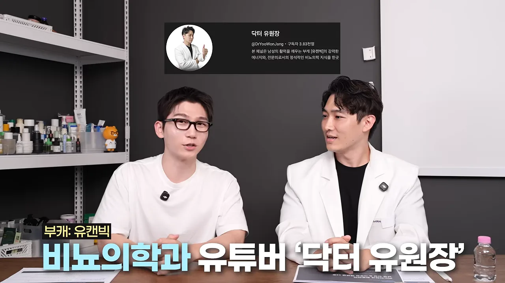
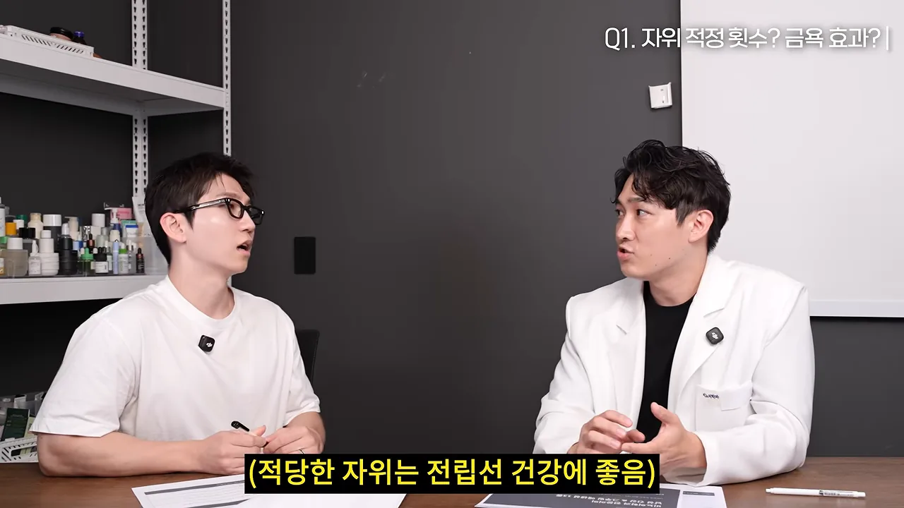
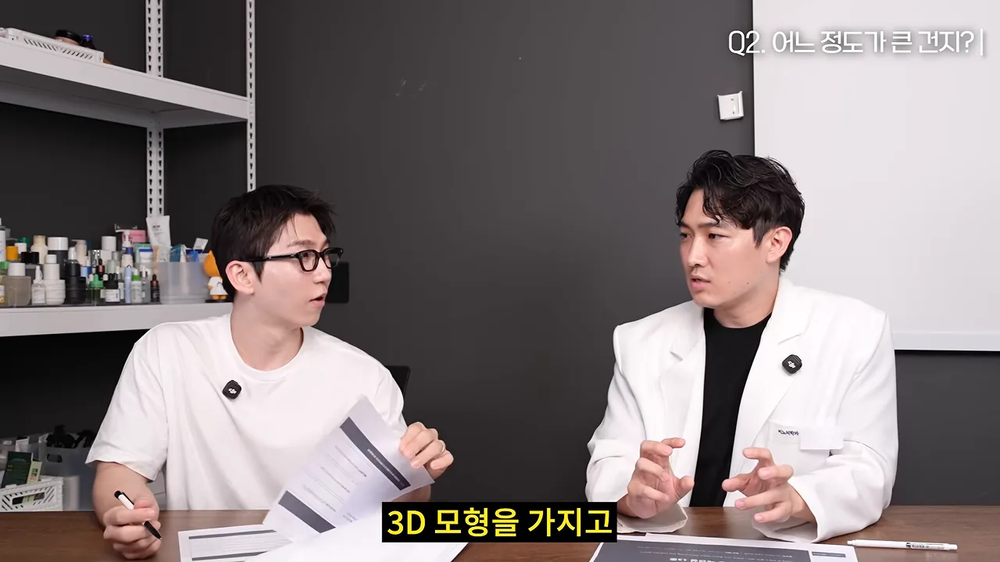
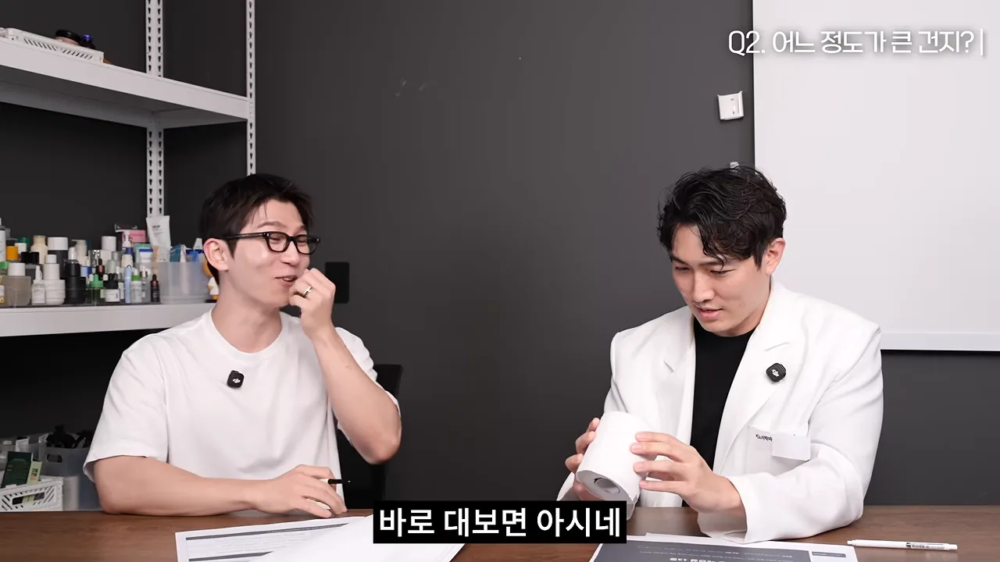
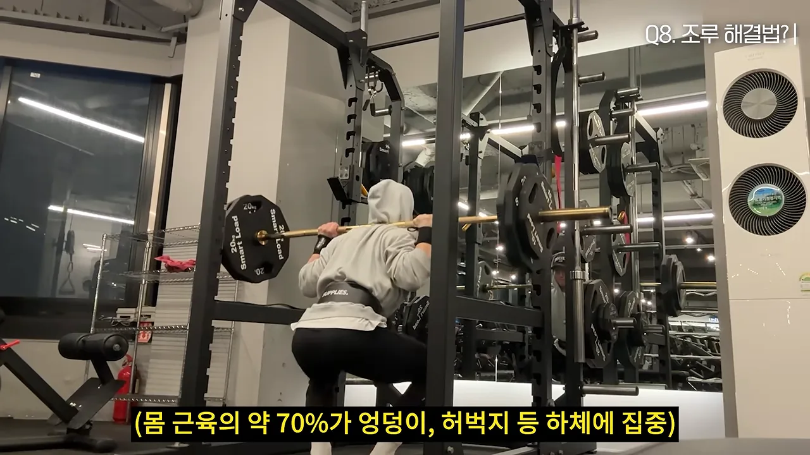
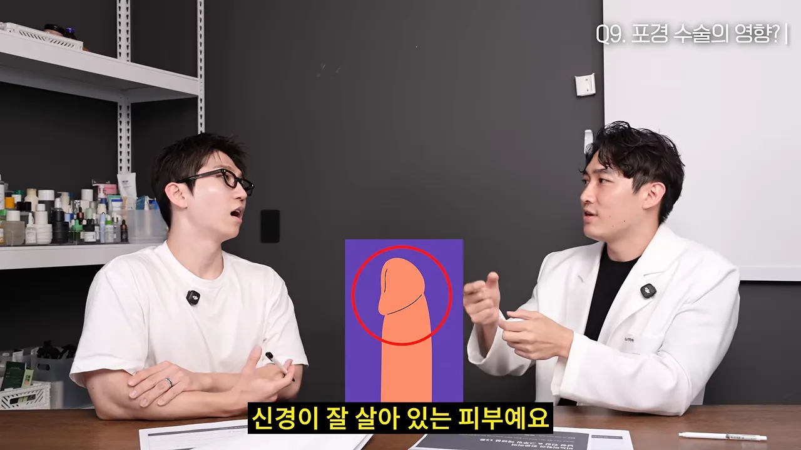
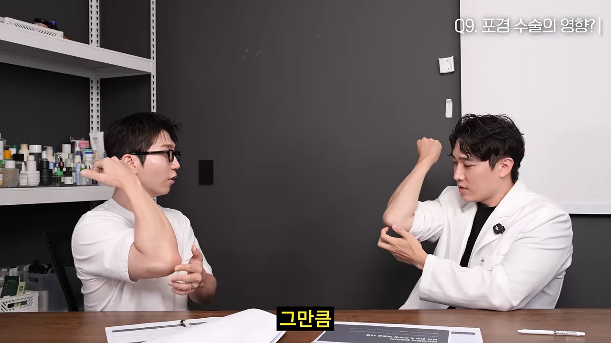
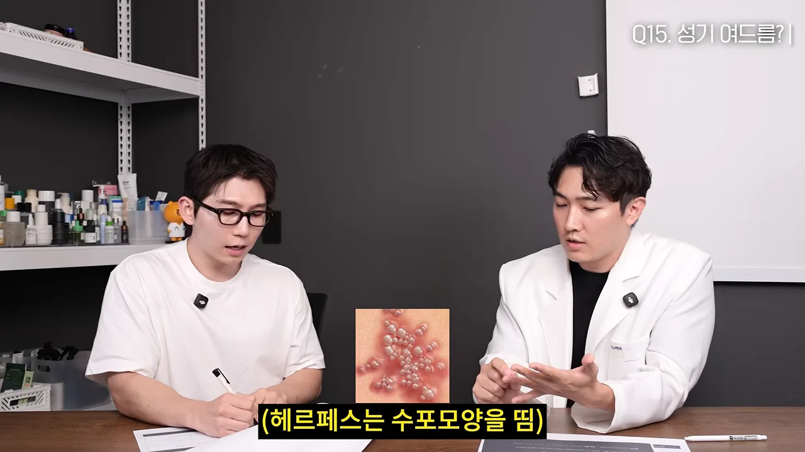
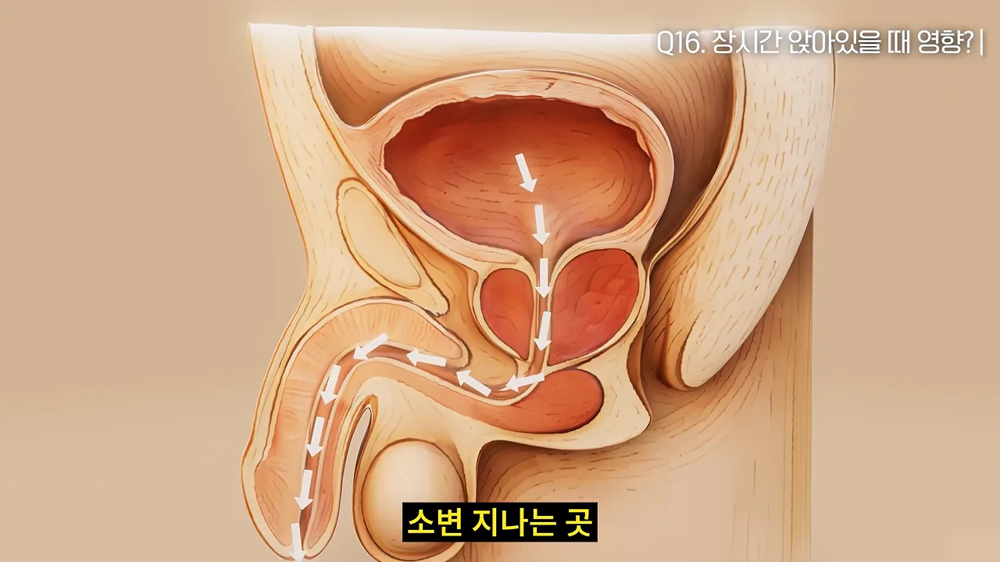
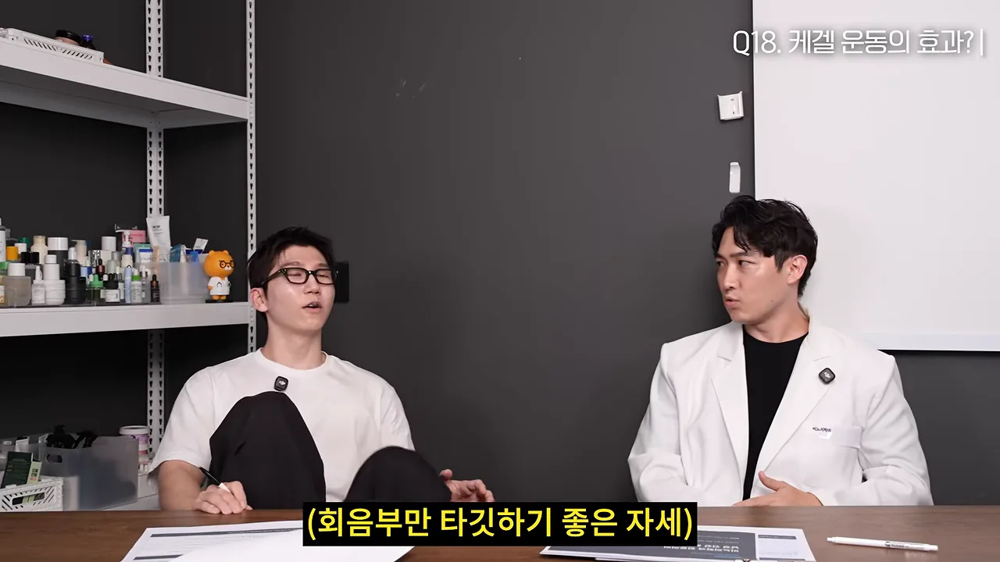

사정은 얼마나 자주, 금욕은 얼마나?
오늘의 게스트는 비뇨의학과 전문의 '닥터 유원장'이에요. 화면 왼쪽 위에 그의 인스타그램 프로필이 뜨고, 아래 자막에 부캐 이름 '유캔빅'이 함께 나와요. 진행자가 남자들이 몰래 궁금해하던 질문을 Q1부터 Q18까지 차례로 던지는 형식이에요.

첫 질문은 사정을 얼마나 자주 해야 하느냐예요. 전문의는 사정을 자주 한 남자들이 전립선암에 덜 걸렸다는 유명한 연구를 꺼내요. 이 연구 하나만 믿기는 어렵지만, 규칙적인 사정이 전립선 건강에 영향을 준다는 건 확실하다고 봐요. 아래 장면의 노란 자막이 그 결론이에요.

금욕은 효과가 있을까요?
예전 금딸 카페에서는 50일 참으면 근육이 붙고, 100일이면 시력이 좋아진다는 이야기가 돌았어요. 전문의는 근거가 없다고 잘라 말해요. 한 달 넘게 참으면 전립선에 염증 물질과 노폐물이 쌓여 울혈성 전립선염이 올 수 있거든요.
다만 예외가 하나 있어요. 자극적인 영상에 도파민이 길들여진 사람이라면 한 달쯤 끊어 보는 게 뇌와 성생활에 좋다고 해요. 이때 끊어야 하는 건 사정이 아니라 매체예요. 영상을 보면서 하는 자위는 치료의 핵심을 놓치는 셈이에요.
크기 이야기: 평균, 둘레, 체지방
한국 기준 평균은 예전 군대에서 잰 연구들이 근거예요. 발기했을 때 평균 길이가 약 13.4cm였어요. 전문의가 이 값을 정규분포에 넣어 재미로 계산해 본 상위 비율도 함께 말해 줘요. 아래 그림은 영상이 말한 숫자만 같은 축척으로 그린 거예요.
길이보다 둘레를 기억해요
진행자가 손에 든 종이는 여성들에게 입체 모형을 고르게 한 연구 자료예요. 여기서 가장 만족스러운 길이로 16cm 정도가 나왔어요. 그런데 시간이 지나 다시 고르게 했더니 길이는 잘 기억하지 못하고 둘레는 정확히 기억했대요.

그래서 나온 게 휴지심 테스트예요. 한국 남성의 둘레 평균은 11~11.5cm쯤이고, 일반 휴지심 둘레가 12cm 정도예요. 휴지심에 꽉 차게 들어가면 평균이라고 생각하면 된대요. 아래 장면에서 전문의가 휴지심을 들어 보이는데, 브랜드마다 굵기가 조금씩 달라요.

관상, 소아비만, 수술
코가 크면 크다거나 손가락 길이와 관련 있다는 연구도 있지만, 100%로 볼 수는 없어요. 훨씬 확실한 건 소아비만이에요. 성장기 비만인 남자아이는 남성 호르몬이 절반으로 줄어서 음경이 덜 자랄 수 있어요. 어른이 돼서도 아랫배에 살이 많으면 음경이 살에 묻혀 밖에서 안 보이는 매몰음경이 생겨요. 그래서 남자는 성장기 체지방 관리가 아주 중요하다고 해요.
보형물 수술은 요즘 의료용 실리콘을 주로 쓰고, 한 해 3만 건쯤 된다고 해요. 크기를 키우는 수술로 해면체 자체를 늘릴 수는 없어요. 대신 묻혀 있던 부분을 꺼내거나 지방을 빼서 보이는 길이를 늘려요. 결국 몸 밖으로 나와야 쓸 수 있으니 기능적인 길이는 실제로 늘어나는 셈이에요.
발기와 사정 시간을 지키는 법
부스터와 보조제는 도움이 될까요?
운동 전에 마시는 에너지 음료나 커피를 관계 전에 마시면 어떨까요? 전문의의 답은 반대예요. 관계 중에 발기를 유지하고 사정을 늦추는 건 부교감 신경이에요. 이 신경이 켜져야 아래쪽 혈관이 열려요. 카페인은 피를 빨리 돌게 하고 혈관을 좁혀서 정확히 반대로 작용해요. 발기부전이나 조루 증상이 있다면 오후 늦게부터는 커피도 피하는 게 좋대요.
아르기닌도 기대만큼은 아니에요. 먹으면 70%쯤이 장과 간에서 먼저 없어지고, 남은 양도 혈관을 넓히는 물질의 재료일 뿐이에요. 같은 재료인 시트룰린은 간을 거치지 않고 몸속에서 아르기닌으로 바뀌어서 더 낫다고 봐요.
약 없이 심인성 발기부전을 푸는 법
2~30대 발기부전은 70~80%가 심인성이에요. 몸이 아니라 '잘해야 한다'는 압박이 원인이라는 뜻이에요. 그래서 해법도 단순해요. 삽입에 몰두하지 말고 스킨십을 중심으로 자주 하다 보면 풀린다고 해요.
조루는 네 종류예요
조루라고 다 같은 게 아니에요. 전문의는 원인에 따라 네 가지로 나누고, 치료도 다르게 가져가요. 영상이 말한 기준과 치료를 한 표로 모았어요.
| 종류 | 특징 | 치료 |
|---|---|---|
| 선천적(평생형) 조루 | 처음부터 그랬고, 1분~1분 30초 안에 끝나요. 뇌와 감각의 문턱이 낮아요 | 약물과 행동 치료를 함께 해요 |
| 후천적 조루 | 원래 괜찮다가 만성질환·사고 뒤 생겨요. 기준은 3분이에요 | 원인이 된 질환을 고쳐요 |
| 가변적 조루 | 상황과 컨디션에 따라 달라져요 | 컨디션 관리예요 |
| 주관적 조루 | 시간은 충분한데 본인은 짧다고 느껴요 | 잘못된 성지식과 과한 기대를 바로잡아요 |
행동 치료로는 두 가지를 말해요. 스톱 앤 스타트는 사정할 것 같은 신호가 올 때 잠깐 멈추는 방법이에요. 효과는 40~50% 정도예요. 타이밍을 놓쳐서 나오려는 순간 손으로 막으면 정액이 역류해 전립선염이나 만성 골반 통증이 생길 수 있어요. 진행자도 직접 해 보니 타이밍 잡기가 생각보다 어려웠다고 해요. 케겔 운동은 70% 정도로 효과가 더 좋다고 해요.
찬물 샤워를 하면 조루가 낫는다는 말은 근거가 없어요. 몸을 각성시켜 교감 신경을 켜는 행동이라 오히려 반대로 작용해요.
성기능을 위한 운동 세 가지
전문의가 꼽은 운동은 하체 운동, 달리기, 케겔 운동이에요. 셋이 맡는 역할이 다 달라서 모두 하는 게 좋다고 해요.
하체 운동을 꼽은 이유는 근육 분포예요. 아래 장면 자막처럼 몸 근육의 약 70%가 엉덩이와 허벅지에 몰려 있어요. 이 근육이 움직여야 남성 호르몬이 제대로 나온다고 해요.

케겔 운동을 해 본 진행자는 사정감을 스스로 쥐고 있는 느낌이 생긴다고 말해요. 팔다리의 보이는 근육만이 아니라, 음경을 받치는 근육을 단련해야 의식하지 않아도 피를 잘 잡아 준다는 설명이에요. 구체적인 방법은 마지막 섹션에서 다뤄요.
포경수술과 피부 여유분
진행자는 초등학교 6학년 때 포경수술을 받았어요. 그 세대는 80%쯤 했지만 요즘은 성인이 될 때까지 하지 않는 추세예요. 전문의는 사춘기가 끝날 무렵이면 95~99%가 자연스럽게 포경이 된다고 말해요. 진행자가 억울해하는 장면이 이어지는 이유예요.
수술이 크기를 바꾸지는 않아요. 해면체 크기는 원래 정해져 있으니까요. 문제는 피부예요. 너무 많이 잘라 얇게 남은 사람은 관계 중에 피부가 찢어지기도 하고, 피부 연장술을 받기도 해요.
귀두 쪽 피부가 남아야 하는 이유
전문의가 가장 좋다고 보는 상태는 피부 여유분이 어느 정도 있고, 귀두 바로 아래 피부가 남아 있는 거예요. 아래 장면에 뜬 그림에서 빨간 동그라미가 그 부분이에요. 신경이 잘 살아 있는 피부라 여기가 많이 남을수록 더 잘 느껴요.

피부 여유분이 있으면 관계 중에 속의 심지와 바깥 피부가 함께 움직이면서 입체적인 감각이 생겨요. 이걸 '글라이딩 효과'라고 불러요. 전문의는 이를 팔꿈치로 설명해요. 팔을 편 채 팔꿈치를 긁을 때와 굽혀서 피부가 팽팽할 때 긁는 걸 비교하면, 팽팽할 때 자극이 훨씬 세요.

그래서 여유분은 많아도 적어도 문제예요. 영상이 말한 세 가지 경우를 나란히 그렸어요.
진행자는 느낌이 좋아지면 오히려 더 빨리 끝날 줄 알았다고 해요. 전문의의 설명은 반대예요. 여유분이 없을 때 자극이 직접 오기 때문에 조루가 생길 수 있어요. 이미 일찍 수술했더라도 지금 문제가 없다면 나쁜 건 아니라고 덧붙여요.
임신을 준비하는 남자가 챙길 것
아침이 좋을까요, 저녁이 좋을까요?
하고 싶을 때 하는 게 가장 좋다는 게 첫 답이에요. 의학적으로 따지면 차이는 있어요. 남성 호르몬은 아침 7~9시쯤 가장 높아서 이때는 최고의 컨디션으로 할 수 있어요. 밤에는 하루 일을 끝내고 마음이 편할 때라 더 즐길 수 있어요. 남성 호르몬이 높을 때 만들어진 정자가 운동성 같은 질이 더 좋을 수는 있다고 해요.
딸을 낳는 방법이 있을까요?
딸 둘의 아빠인 전문의는 의사들 사이에 도는 이야기를 꺼내요. 엑스레이를 많이 찍는 정형외과처럼 방사선을 많이 쬐는 과 의사들이 딸을 많이 낳는다는 연구가 실제로 있었대요. 다만 나중에 통계적으로 의미가 없다고 나왔어요. 방사선에 손상된 정자로 생긴 아이가 일찍 유산되면서 그런 결과가 나왔을 수 있다는 해석만 남아요.
임신 전에 남자가 할 일
난임의 원인은 절반이 남성에게도 있어요. 전문의가 기준으로 삼는 숫자는 정자가 만들어지는 데 걸리는 74일이에요. 대략 3개월로 보고, 100일 동안 몸을 관리하라고 해요.
전문의는 후성유전학도 언급해요. 부모의 생활 습관이 자녀의 유전자 자체를 바꾸지는 않아요. 하지만 원래 가진 스위치 중 좋은 신호는 끄고 나쁜 신호는 켜는 식으로 조정할 수는 있다고 해요.
탈모약은 끊어야 할까요?
영향은 있어요. 남자가 먹는다고 기형아를 만드는 약이라고 하지는 않아요. 대신 정액량, 정자 수, 정자 운동성을 떨어뜨려서 임신 성공 확률을 낮춰요. 성분마다 끊는 기간도 달라요. 전문의는 피나스테리드는 3개월, 두타스테리드는 6개월을 기준으로 말해요.
더 조심할 건 따로 있어요. 값을 아끼려고 같은 성분의 전립선비대증 약을 처방받아 쪼개 먹는 경우가 많아요. 이때 생긴 가루나 쪼갠 약은 여성이 절대 만지면 안 돼요. 피부로 흡수될 수 있기 때문이에요. 임신 8~12주에 남자 아이의 생식기가 만들어지는데, 이때 영향을 받으면 요도하열이 생길 수 있어요. 소변 구멍이 끝이 아니라 중간에, 심하면 음낭 쪽에 생기는 질환이에요.
청결제와 성기에 나는 것들
남성 청결제, 써야 할까요?
전문의는 쓰는 게 좋다고 보고, 본인도 쓰고 있대요. 성기 주변은 피지와 땀이 많아서 균과 곰팡이가 살기 좋은 곳이에요. 이곳을 지키는 게 피지 보호막인데, 세정력이 강한 일반 비누는 이것까지 씻어 내요. 그러면 가려워지고, 계속 긁다 보면 피부염이 생겨요.
성기에 뭐가 났을 때
성기에 나는 여드름처럼 보이는 것은 대부분 털 주변에 생기는 모낭염이에요. 만지면 따갑고 붉게 올라와요. 귀두 둘레에 하얀 좁쌀이 진주알처럼 줄지어 난 것은 진주양 음경구진이에요. 남성 호르몬 때문에 자연스럽게 생기는 피부 돌기라 큰 병이 아니에요.
조심해야 하는 건 헤르페스와 곤지름이에요. 아래 장면에서 두 사람 사이에 뜬 작은 사진이 헤르페스예요. 붉은 피부 위에 맑은 물집 여러 개가 모여 있는 모양이 전형적이라고 해요.

곤지름은 쥐젖처럼 생겼어요. 처음엔 하나로 시작해도 방치하면 여러 개가 브로콜리처럼 빽빽하게 번져요. 영상이 구별한 네 가지를 정리하면 이래요.
| 이름 | 생김새 | 심각한가요? |
|---|---|---|
| 모낭염 | 털 주변이 붉고 따가워요 | 크게 중한 질환은 아니에요 |
| 진주양 음경구진 | 하얀 좁쌀이 진주알처럼 줄지어 나요 | 자연적인 피부 돌기예요 |
| 헤르페스 | 물집(수포) 모양이에요 | 주의해야 해요 |
| 곤지름 | 쥐젖 모양, 방치하면 브로콜리처럼 번져요 | 주의해야 해요 |
남자도 가다실을 맞아야 할까요?
곤지름의 원인은 HPV(Human Papillomavirus)라는 바이러스예요. 여성에게는 자궁경부암의 원인이고, 남성에게는 음경암보다는 주로 곤지름을 일으켜요. 몸에 숨어 있다가 면역이 떨어지거나 위생이 나쁠 때 나타나서, 언제 옮았는지 알기 어려워요.
그래서 요즘은 남자도 가다실을 많이 맞아요. 전문의는 곤지름을 99% 막아 준다고 말해요. 효과가 가장 좋은 건 아직 바이러스에 걸리기 전이에요. 백신은 치료제가 아니라서 이미 들어온 바이러스를 없애지는 못해요. 그래도 증상이 덜 나타나게 억제하는 효과는 있다고 해요. 결론은 이왕이면 빨리 맞는 게 좋다는 거예요.
오래 앉아 있지 말고, 케겔은 제대로
전립선은 어디에 있을까요?
진행자는 전립선 위치를 정확히 대지 못해요. 전문의 설명으로는 항문과 고환 사이, 회음부 안쪽이에요. 정액만 만드는 곳이 아니라, 방광 바로 아래에서 소변이 나가는 길을 터널처럼 감싸고 있어요. 아래 그림에서 흰 화살표가 방광에서 출발해 전립선을 뚫고 음경 쪽으로 나가는 소변 길이에요.

남자가 똑바로 앉으면 가장 직접적으로 눌리는 곳이 전립선이에요. 전문의는 주먹을 한 시간 꽉 쥐는 상황에 빗대요. 손바닥이 아프고 하얗게 질리며, 펴도 한동안 풀리지 않잖아요. 혈관이 많고 호르몬을 만드는 예민한 전립선도 똑같이 눌려 세포가 상하고 염증이 생겨요.
요즘 비뇨기과에는 소변을 너무 자주 봐서 오는 10~20대가 많대요. 대부분 만성 전립선염이나 과민성 방광이고, 오래 앉아 있는 습관이 원인일 수 있어요. 해결은 간단해요. 한 시간에 1~2분만 일어나 책상 주변을 걸어도 90% 이상 회복된다고 해요. 발기를 돕는 신경이 전립선 양옆을 지나기 때문에, 전립선 염증은 발기에도 영향을 줘요.
잔뇨감은 왜 생길까요?
소변을 다 본 줄 알았는데 바지에 넣고 나면 조금 남아 있는 느낌이요. 어릴 땐 없던 증상이 나이 들어 생기는 건 그동안의 생활 습관 때문이에요. 한국인은 하루의 절반 이상을 앉아 지내서 그 영향이 계속 쌓여요. 무거운 가방을 오래 메면 어깨가 뭉치듯, 회음부의 골반 근육이 뭉치고 신경도 둔해진 거예요. 뭉친 곳은 풀어 순환시키고, 처진 곳은 단련해야 하는데 그걸 안 한 거라고 해요.
케겔 운동, 제대로 하는 법
전문의는 케겔 운동이 발기부전 증상을 70%쯤 개선하고, 사정 시간을 4.7배 늘렸다는 연구가 있다고 말해요. 지속 시간을 늘린다기보다 사정을 통제하는 힘을 키워 준다는 설명이에요. 발기와 사정에 관여하는 괄약근이 회음부에서 음경 뿌리까지 감싸고 있어서, 이 근육에 적당한 근력이 있어야 해요. 나이 들면 근감소증으로 근육이 빠지니 더 중요해져요.
처음엔 근육의 감각부터 찾아야 해요. 아래 장면처럼 편하게 누워 무릎을 세우는 자세가 좋다고 해요. 엉덩이, 허벅지, 아랫배에 힘이 들어가지 않아 회음부 근육만 골라 쓸 수 있거든요.

자세를 잡았으면 손을 회음부에 대요. 손이 닿은 곳을 조인다는 생각으로 움직이면 가장 확실하게 감을 잡을 수 있어요. 한 번의 동작은 아래처럼 조이기 5초, 풀기 5초예요.
실전에서는 조이지 말고 풀어요
케겔이 사정을 늦춘다는 소문 때문에, 실전에서 신호가 오면 거기에 힘을 주는 사람이 많아요. 그런데 이게 오히려 더 빨리 끝나게 만들어요. 사정은 그 근육이 불규칙하게 수축하면서 일어나요. 그런데 미리 의도적으로 수축하면 뇌가 '지금이구나' 하고 받아들여요.
| 사정 신호가 올 때 | 몸에서 일어나는 일 | 결과 |
|---|---|---|
| 회음부를 꽉 조인다 | 뇌가 사정 시작 신호로 받아들여요 | 더 빨리 끝나요 |
| 숨을 들이마시며 회음부를 툭 푼다 | 뇌에 미리 신호를 보내지 않아요 | 발기는 유지되고 사정은 늦춰져요 |